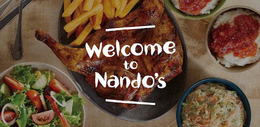
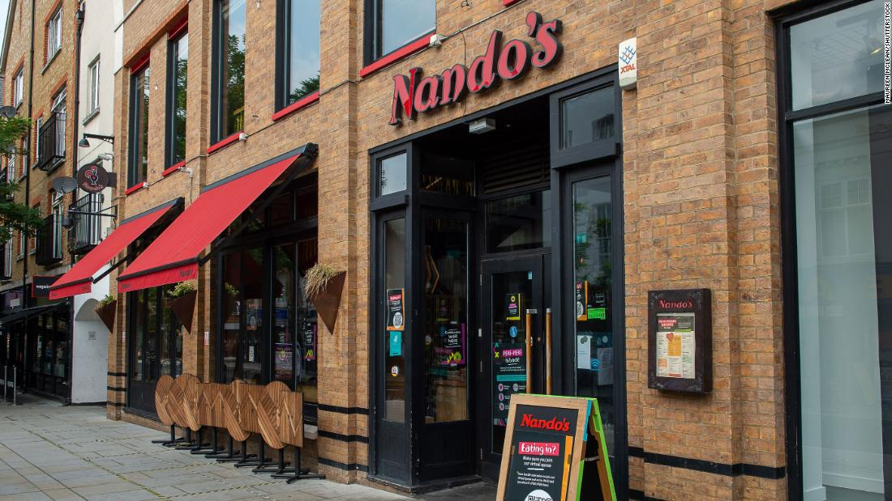

The story of Nando’s starts hundreds of years ago with the first Portuguese explorers who set sail for the East in search of the legendary spice route. And so they landed on our shores and discovered the African Bird’s Eye Chilli or as we know it (and love it), PERi-PERi. Today, many years later, you can find Nando’s restaurants, our delicious, addictive sauces and our world-famous grocery range around the globe.
PERi-PERi is the heart and soul of Nando’s. Its story is our story. For centuries the people of Southeast Africa have used PERi-PERi to bring fire to their food. It is in Mozambique’s rich soil and blistering sunshine that the African Bird’s Eye Chilli grows into its fiery best. When Portuguese explorers arrived there, they were enchanted by its flavour. They added a squeeze of lemon and a kick of garlic and turned PERi-PERi into a very well-travelled spice. Which is how, many years later it ended up in Rosettenville, Johannesburg.
 